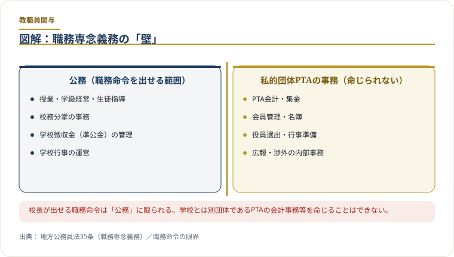
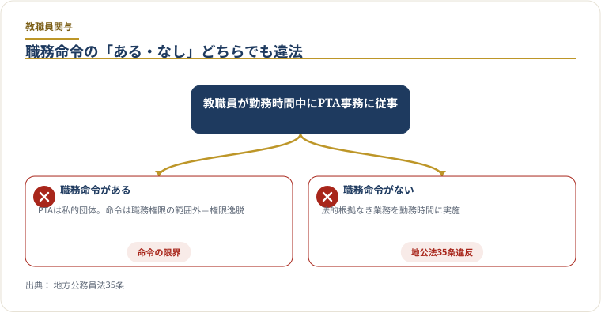
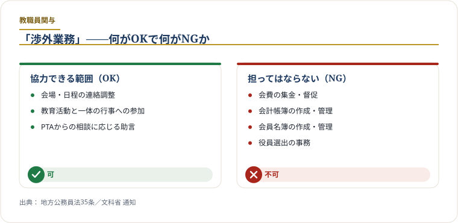
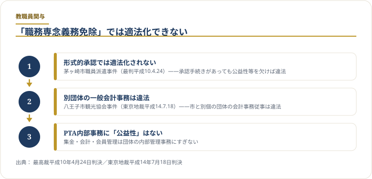

問題は、教職員の善意ではなく「勤務時間中に誰の事務をしているか」です
学校とPTAは協力関係を持ち得ます。しかし、学校職員が勤務時間中に、PTAの会計、集金、名簿、役員選出、文書作成、封入、メール配信などを恒常的に担う場合、それは学校の職務なのか、PTAという別団体の内部事務なのかを分けて確認する必要があります。
学校行事や施設利用に必要な範囲の連絡は、渉外的な対応として整理できます。
PTA会計、名簿、役員選出、会費徴収はPTA側で完結させるべき事務です。
服務免除を使う場合でも、根拠規則、対象者、時間、用務の記録が必要です。
教職員任せを責めるのではなく、PTA側の事務体制へ段階的に戻します。
教職員の職務を明確にする資料は、PTA事務の線引きにも使えます
学校現場では、保護者対応、地域連携、学校運営協議会、学校行事の調整など、教職員が関わるべき周辺業務があります。そのため、「PTAと連絡を取ったら直ちに問題」という整理ではなく、学校教育上必要な連絡調整と、PTAという別団体の内部事務代行を分けて見る必要があります。
教職員の標準的な職務や学校管理規則の整備に関する資料は、この線引きを考える材料になります。学校が担うべき職務を明確にするほど、PTA会計、PTA名簿、役員選出、会費徴収、印刷・封入などを勤務時間内に恒常処理する根拠は説明しにくくなります。
地方公務員法第35条だけでなく、教員の職務と働き方改革資料を合わせて読む
教職員のPTA事務関与を確認するときは、地方公務員法第35条の条文だけでなく、教員の標準的な職務、学校における働き方改革、学校徴収金や外部対応の整理を合わせて見る必要があります。PTAとの連絡調整はあり得ますが、会費徴収、未納確認、会計処理、名簿作成、役員選出、広報編集を学校職務として扱うには、別途根拠説明が必要です。
「担任の先生がPTA封筒を配ってくれる」「事務室で会費の集計をしてもらっている」——多くの学校でこれが当たり前になっていますが、これらは地方公務員法第35条（職務専念義務）との関係で、職務上の根拠を確認すべき行為です。悪意があったわけではなく、長年の慣行として定着してきたものですが、制度上の線引きは必要です。このページでは、何が問題なのか・何はよくて何はダメなのか・どう改善するかを整理します。
図解：職務専念義務の壁

税金で支払われる勤務時間を、任意団体（PTA）の事務に充てることが問題の核心です。
職員は、法律又は条例に特別の定がある場合を除く外、その勤務時間及び職務上の注意力のすべてをその職責遂行のために用い、当該地方公共団体がなすべき責を有する職務にのみ従事しなければならない。
PTAは学校とは別の任意団体です。教職員が勤務時間中にPTA内部事務を担う運用は、職務専念義務や公私分離の観点から確認が必要な便宜供与の問題になります。
行政実例：「PTA事務は職務に含まれない」

この点は、法令の解釈として1960年代から一貫して確認されています。
この行政実例は、現在の運用を点検する際にも重要な手掛かりになります。当委員会が整理している教育委員会回答の中にも、PTA内部事務と学校職務を分けて考える趣旨の回答があります。「昔からやっていた」「暗黙の了解だった」は法的な正当化根拠にはなりません。
服務免除制度との関係
地方公務員法第35条ただし書き・各自治体の条例に基づき、一定の場合には「職務に専念する義務の特例（服務免除）」が認められることがあります。ただし、この制度を使うためには条例・規則の根拠が必要で、PTAへの日常的な関与を包括的に免除することはできません。「服務免除を取れば問題ない」というわけでなく、その範囲と手続きが厳格に問われます。
何はOKで、何はNGか

「一切の関与禁止」ではありません。渉外業務（学校↔PTA間の連絡調整窓口）を基本的な接点とし、PTA内部事務の代行と分けて確認します。
教職員がPTA役員になること
「校長がPTA会長」「教頭がPTA副会長」という状態は各地で見られますが、これは複数の問題をはらんでいます。
- 勤務時間中の役員活動が職務専念義務違反になる（地公法35条）
- 学校の公的権限とPTAの私的意思決定が混同される（社会教育法上の独立性の毀損）
- 「校長に反対できない」という心理的圧力が保護者に生じ、任意加入の実質を損なう
- 管理職が会計を担うと公費・私費の区分が一層曖昧になる
社会教育法第12条の精神（行政からの自主性）からも、教職員がPTAの意思決定機関の中核を担うことは望ましくありません。
是正の進め方：段階的に切り離す

「今すぐすべてをやめる」と機能不全が起きます。現状把握から始め、段階的に切り離すことが現実的です。
現状の棚卸し
教職員が行っているPTA関連作業をリストアップします（配布物・集金補助・印刷・電話対応など）。多くの場合、誰も「全体像」を把握していないまま慣習が続いています。
PTA側で代替できる業務を特定する
会費管理にはクラウド会計ツール、配布物配付にはPTA役員による配付体制など、学校に依存しない方法を検討します。「不可能」なものはほとんどなく、ほぼすべてPTA側で担えます。
校長・教育委員会と移行計画を共有する
「法令上の問題があるため、1年かけて切り離す」と校長に伝えます。教育委員会も同様の問題認識を持っているケースが多く、指針を共有することで協力を得やすくなります。
切り離し後の「渉外業務のみ」体制を書面化する
学校とPTAの間で「渉外窓口覚書」を作成し、接点の範囲を明示します。これが適正化の完成形です。
全国教育委員会の回答に見る共通認識
掲載している教育委員会回答には、PTA内部事務への教職員関与について、職務専念義務や服務上の整理を要するという趣旨の回答が含まれています。件数を引用する場合は、回答本文と分類タグを分けて確認してください。
適切な回答例の傾向
「PTA活動は教職員の職務ではないため、勤務時間中の従事は適切でない」「会費集金・名簿管理は学校の所掌外」とする回答が複数の教育委員会から確認されています。
曖昧な回答例の傾向
「各学校の判断に委ねている」「慣行的に行われているが問題とは認識していない」という回答もあり、教育委員会自体の認識が整理されていないケースも見られます。
回答全文は教育委員会の回答ページで自治体別に確認できます。
確認に使う一次資料
教職員がPTA事務に関与する問題は、「慣行」ではなく、職務専念義務、兼職兼業、学校会計処理、学校関係団体との関係として整理します。まずは文部科学省の学校関係団体資料と、地方公務員法35条を確認します。
兼職兼業・職専免資料を、教育委員会への照会項目に変える
兼職兼業、職務専念義務免除、学校関係団体の会計処理に関する資料は、抽象的な制度説明で終わらせず、学校現場の実務を確認する質問に変換できます。教育委員会に照会する際は、「PTAに協力してよいか」ではなく、学校職員がどの身分・どの時間・どの根拠で関与しているのかを問う形にします。
PTA会計、集金、名簿、印刷、メール配信、総会資料作成が勤務時間内に行われているか。
校務として命じているのか、慣行的に任せているのか、個人の任意協力なのか。
職務専念義務免除を使っているなら、根拠規則、対象者、時間、用務、承認記録があるか。
PTA役員・会計担当・事務担当としての地位を兼ねる場合、兼職兼業の手続を整理しているか。
学校事務室がPTA通帳、現金、振替データ、領収書、決算資料を扱っていないか。
教職員依存がある場合、PTA側へ戻す期限、担当、手順を定めているか。